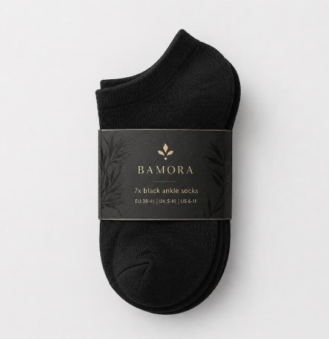

En bambussokk starter langt fra sokkeskuffen. Her følger vi materialets reise gjennom seks steg—fra hurtigvoksende plante til mykt garn og et ferdig par.
Bambus er botanisk sett et gress og kan vokse raskt. For å bli til tekstil hentes cellulose ut av planten og bearbeides til lange, jevne fibre. Fibrene spinnes til garn før sokken strikkes, formes og kontrolleres.
Råmateriale
01
Bambusen høstes
Det begynner med planten.
Modne bambusstengler høstes og kuttes nær bakken. Rotnettet blir stående, slik at planten kan fortsette å sette nye skudd. Bambusen sorteres og sendes videre til bearbeiding.
Verdt å viteBambus til tekstil er ikke en ferdig fiber i planten. Cellulosen må først frigjøres og foredles.
Cellulose
02
Fra stengel til masse
Bambusen brytes ned i mindre deler.
Stenglene knuses til flis. Cellulosen skilles fra plantematerialet og renses til en jevn masse. Dette er grunnlaget for fiberen som senere skal bli til garn.
Myke fibre
03
Fiberen formes
Cellulose blir til lange fibre.
Den rensede cellulosen løses opp til en flytende masse og presses gjennom svært små åpninger. I et kontrollert bad gjendannes cellulosen som lange, fine viskosefibre.
Bambusviskose beskriver råvaren og fibertypen. Miljøavtrykket avhenger også av hvordan kjemikalier, vann og energi håndteres hos produsenten.
Signaturgarn
04
Fra fiber til tråd
Fibrene spinnes til mykt garn.
Fibrene vaskes, tørkes og samles før de spinnes til en jevn tråd. Garnets tykkelse, tvinn og blanding er avgjørende for følelsen, slitestyrken og passformen i den ferdige sokken.

Presis strikk
05
Sokken tar form
Garnet strikkes maske for maske.
Datastyrte strikkemaskiner former skaft, hæl og tå. Ulike strikkesoner kan gi støtte, fleksibilitet og en behagelig kant som sitter godt uten å føles stram.
Ferdig Bamora
06
Den siste finishen
Kontrollert, paret og pakket.
Tåsømmer avsluttes, løse tråder fjernes og sokkene formes. Hvert par kontrolleres for størrelse, farge og utførelse før det pares og pakkes i Bamoras signaturuttrykk.
Fine cellulosefibre gir garn med en glatt og behagelig overflate.
02
Pustende komfort
Material- og strikkekonstruksjonen hjelper sokken å føles lett og komfortabel.
03
Gjennomtenkt passform
Hæl, tå og mansjett formes for en sokk som sitter pent gjennom dagen.
Produksjonsmetode og fibersammensetning kan variere mellom modeller og leverandører. Endelig dokumentasjon og eventuelle miljøpåstander bør alltid baseres på Bamoras faktiske leverandørdata og sertifikater.